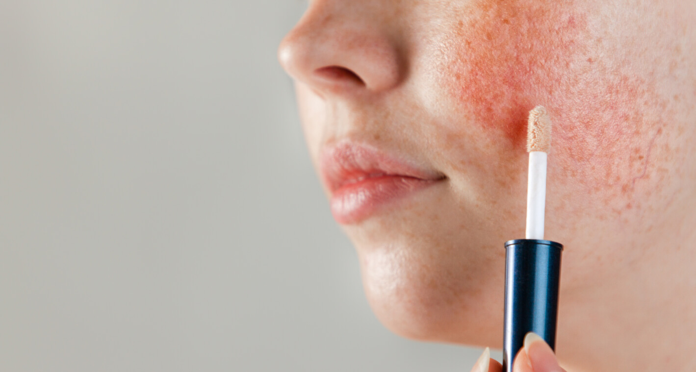
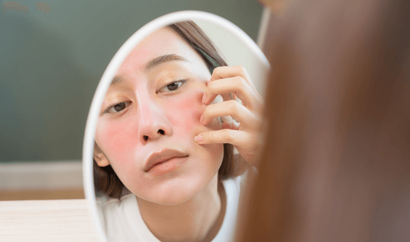
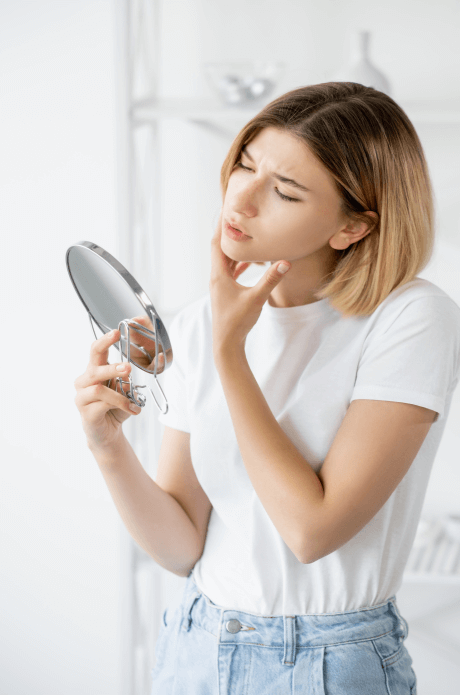
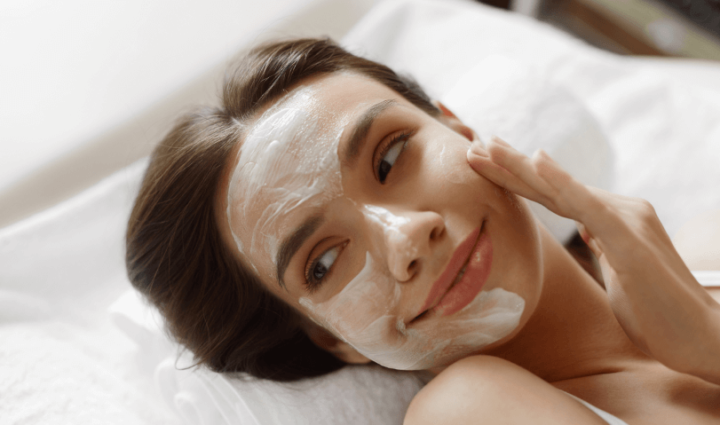

Себорейный дерматит и розацеа – в чем разница

10.02.2023

957

7 мин

Содержание
Дерматозы и покраснения тревожат при появлении первых симптомов. Некоторые кожные заболевания легко спутать между собой, особенно когда болезнь проявилась впервые.
Эта статья поможет разобраться в симптомах и подскажет, как отличить розацеа от себорейного дерматита. Обе эти болезни имеют схожую картину на начальном этапе появления, но явное отличие в симптоматике и способах лечения.
Прежде, чем мы начнем, напоминаем, что прочтение данного материала не отменяет поход к врачу, однако поможет подготовить вас к нему и лучше понять специфику болезни.
Что такое розацеа и себорейный дерматит
Розацеа — хронический воспалительный дерматоз, для которого характерно покраснение кожи лица, реже — шеи и зоны декольте. В некоторых случаях можно наблюдать образование узлов и гнойников. Болезнь чаще развивается у женщин в возрасте от 30 до 50 лет, которые имеют генетическую предрасположенность.

Себорейный дерматит — хроническое рецидивирующее воспалительное заболевание кожи, для которого характерно изменение количественного и качественного состава кожного сала. В отличие от розацеа, это ответная реакция организма на разрастание дрожжеподобного гриба Malassezia. Покраснение проявляется, как правило, на лице и волосистой части головы.
Локализация болезней
При себорейном дерматите поражения локализуются на участках кожи, богатых сальными железами, а именно на скулах, крыльях носа, лбу, надпереносье, бровях, в носогубных складках, и обычно сочетаются с поражением кожи волосистой части головы, заушной области, верхней части туловища и крупных складок.
В отличие от предыдущего недуга, розацеа локализуется в центральной части лица: на щеках, лбу, носогубном треугольнике. Проявляется в виде покраснения и расширения мелких сосудов. В некоторых случаях имеют место папулопустулезные высыпания.
Клиническая картина

При себорейном дерматите в легкой форме может наблюдаться умеренное шелушение без признаков активного воспаления. В тяжелых случаях высыпания могут быть представлены крупными бляшками, покрытыми массивными желтыми чешуйчатыми корками, при отторжении которых наблюдается мокнущая поверхность.
В отличие от розацеа, на коже лица и туловища высыпания чаще всего представлены четко ограниченными красными пятнами, на поверхности которых наблюдается шелушение. Пациенты, как правило, жалуются на зуд, жжение, шелушение в области очагов.
Кожа в области поражения становится серовато-белой или желтовато-красной, резко выделяются фолликулярные отверстия. Возможно развитие блефарита с появлением корок вдоль края века и скоплением масс роговых клеток вокруг ресниц.
Розацеа отличается характерным покраснением кожи, преимущественно на щеках и боковых поверхностях носа. Болезнь появляется сначала эпизодически, может усиливаться приливами, а затем превращается в стойкую эритему (покраснение).
Цвет эритемы может варьироваться от ярко-розового до синюшно-красного в зависимости от продолжительности болезни, при этом иногда наблюдаются сосудистые звездочки.
Большая часть больных предъявляет жалобы на ощущения жжения и покалывания в области покраснения, которые усиливаются при воздействии низких и высоких температур, алкоголя и психоэмоционального напряжения.
Факторы, провоцирующие себорейный дерматит
Индивидуальные особенности организма
Локализация высыпаний при себорейном дерматите на участках кожи с максимальной плотностью сальных желез говорит о том, что развитию заболевания подвержены люди, у которых кожное сало вырабатывается в избыточном количестве.
Но в настоящее время доказано, что важную роль в развитии этого заболевания играет и состав кожного сала: у пациентов, страдающих этим заболеванием, повышено содержание триглицеридов и снижено количество сквалена и ненасыщенных жирных кислот 1.
Нарушение барьерной функции кожи
Это происходит из-за сочетания сразу нескольких факторов: нарушения в работе иммунной системы кожи, агрессивного влияния микрофлоры и внешней среды.
Работа иммунной системы
Среди других факторов, которые способствуют появлению и распространению болезни, можно выделить особенности функционирования иммунной системы. Например, у пациентов в иммунодефицитных состояниях (ВИЧ-инфекции, химиотерапия
и т. д.) себорейный дерматит развивается гораздо чаще1.
Другие факторы
К ним можно отнести прием некоторых лекарственных препаратов и иммуномодуляторов, а также факторы внешней среды, например, частое воздействие отрицательных температур, стрессы и недосып.
Факторы, провоцирующие розацеа
В отличие от себорейного дерматита, причины появления розацеа до сих пор изучаются. По современной гипотезе, заболевание развивается вследствие совокупности аномалий структуры капилляров, нервных волокон кожи и патологической воспалительной реакции2.
На заболеваемость могут влиять нарушения в работе желудочно-кишечного тракта, иммунные дисфункции, психосоматические реакции.
Экзогенные факторы
Перепады температур, инсоляция, ионизирующая радиация, сильный ветер, физические нагрузки, раздражающие косметические процедуры, длительное топическое лечение кортикостероидными средствами, прием горячей острой пищи, пряностей, крепкого кофе, злоупотребление алкоголем2.
Генетическая предрасположенность
Сравнительный анализ генов в коже у больных и здоровых людей показал, что в 46% случаев у пациентов с розацеа были выявлены определенные кластеры генов, которые указывают на наследственность заболевания2.
На что обратить особое внимание
При розацеа выявлено повышенное содержание клещей Demodex folliculorum, которые обитают в сальных железах3. А спровоцировать их появление может обыкновенная пыль. Поэтому людям, которые имеют предрасположенность к этой болезни, рекомендуется чаще проводить влажную уборку.
В отличие от себорейного дерматита, розацеа может проявиться в виде воспаления кожи вокруг глаз и других симптомов, таких как слезотечение, ощущение инородного тела, зуд, светобоязнь и помутнение зрения. Более 50% пациентов с покраснением кожи лица имеют признаки глазных заболеваний. Поэтому, кроме посещения дерматолога, рекомендуется консультация офтальмолога.
Не откладывайте визит к врачу. При первых проявлениях симптомов болезни обращайтесь к специалистам. Чем раньше вы обратитесь, тем быстрее будет назначена терапия и получен результат.
Подход к лечению

В лечении себорейного дерматита, как правило, применяются противовоспалительные, противогрибковые и кератолические препараты. Это могут быть различные лекарственные средства для наружного применения в виде кремов, гелей и шампуней.
В случае с розацеа нельзя утверждать о полном исцелении. Но болезнь успешно корректируется: уменьшается выраженность симптомов и продлеваются периоды ремиссии. В терапии розацеа главную роль играют правильное определение провоцирующих факторов и совместные усилия врача и пациента по их устранению. В основе лечения лежат ежедневный уход, уменьшение инсоляции и наружная терапия.
Литература:
- Полонская А.С., Шахотина Е.А., Круглова Л.С. Себорейный дерматит: современные представления об этиологии, патогенезе и подходах к лечению // Клиническая дерматология и венерология. – 2020.
- Потекаев Н.Н., Демина О.М. Современные этиопатогенетические механизмы развития розацеа и новые методы терапии // Клиническая дерматология и венерология. – 2017.
- Britta De Pessemier, Lynda Grine, Melanie Debaere, Aglaya Maes, Bernhard Paetzold and Chris Callewaert Gut–Skin Axis: Current Knowledge of the Interrelationship between Microbial Dysbiosis and Skin Conditions // Microorganisms 2021.